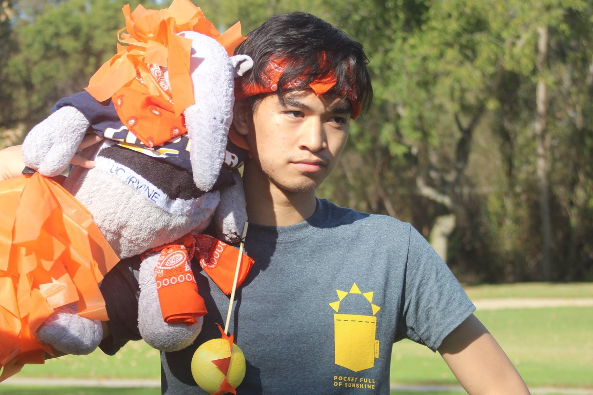
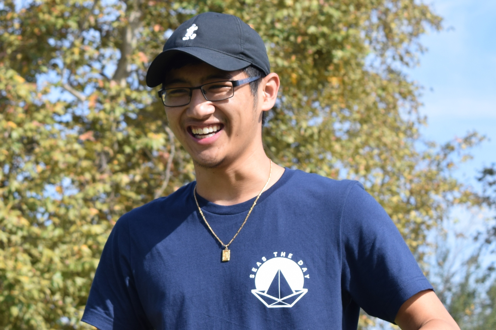
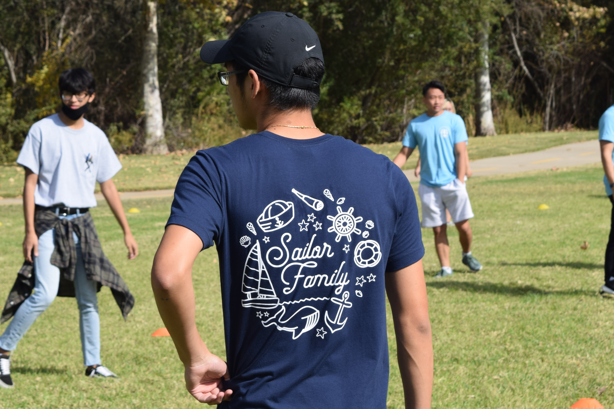

GRAPHICS
A collection of apparel designs.
One of my favorite things to design is grapgics for apparel. As much as I enjoy the process and journey of creating, nothing brings me more joy but the end reult: to see my design come to life through seeing people wear them. Take a look at my brainstorming and alternative designs here. Currently working on updating content... (Crickhollow Housing Jacket, Healing Jacket, Solar Longsleeves)



